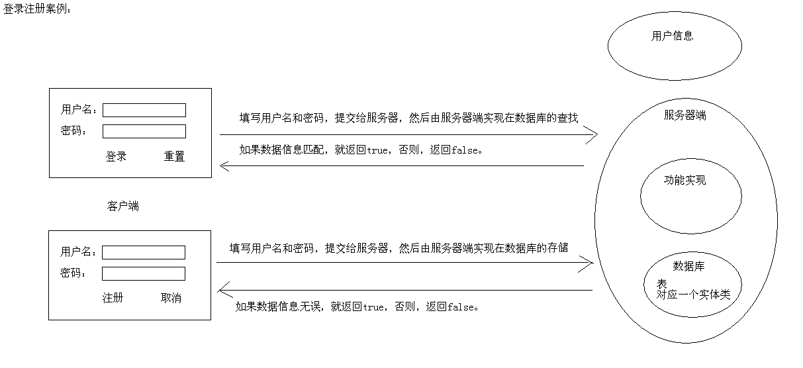
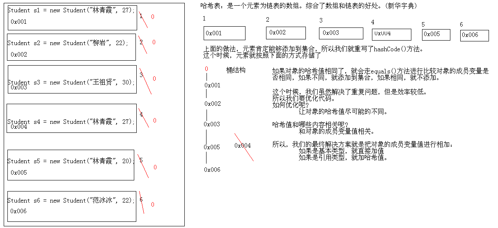
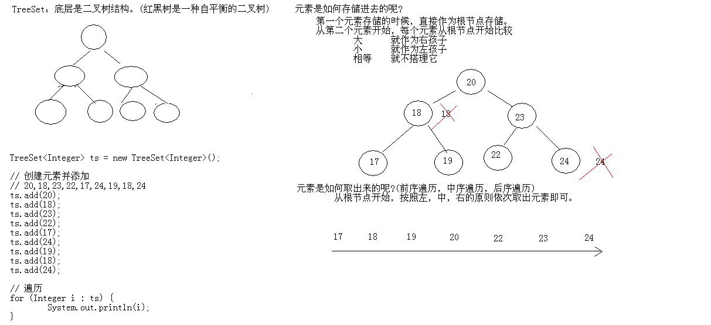

总结¶
1:登录注册案例(理解) 2:Set集合(理解) (1)Set集合的特点 无序,唯一 (2)HashSet集合(掌握) A:底层数据结构是哈希表(是一个元素为链表的数组) B:哈希表底层依赖两个方法：hashCode()和equals() 执行顺序： 首先比较哈希值是否相同 相同：继续执行equals()方法 返回true：元素重复了，不添加 返回false：直接把元素添加到集合 不同：就直接把元素添加到集合 C:如何保证元素唯一性的呢? 由hashCode()和equals()保证的 D:开发的时候，代码非常的简单，自动生成即可。 E:HashSet存储字符串并遍历 F:HashSet存储自定义对象并遍历(对象的成员变量值相同即为同一个元素) (3)TreeSet集合 A:底层数据结构是红黑树(是一个自平衡的二叉树) B:保证元素的排序方式 a:自然排序(元素具备比较性) 让元素所属的类实现Comparable接口 b:比较器排序(集合具备比较性) 让集合构造方法接收Comparator的实现类对象 C:把我们讲过的代码看一遍即可 (4)案例： A:获取无重复的随机数 B:键盘录入学生按照总分从高到底输出 3:Collection集合总结(掌握) Collection |--List 有序,可重复 |--ArrayList 底层数据结构是数组，查询快，增删慢。 线程不安全，效率高 |--Vector 底层数据结构是数组，查询快，增删慢。 线程安全，效率低 |--LinkedList 底层数据结构是链表，查询慢，增删快。 线程不安全，效率高 |--Set 无序,唯一 |--HashSet 底层数据结构是哈希表。 如何保证元素唯一性的呢? 依赖两个方法：hashCode()和equals() 开发中自动生成这两个方法即可 |--LinkedHashSet 底层数据结构是链表和哈希表 由链表保证元素有序 由哈希表保证元素唯一 |--TreeSet 底层数据结构是红黑树。 如何保证元素排序的呢? 自然排序 比较器排序 如何保证元素唯一性的呢? 根据比较的返回值是否是0来决定 4:针对Collection集合我们到底使用谁呢?(掌握) 唯一吗? 是：Set 排序吗? 是：TreeSet 否：HashSet 如果你知道是Set，但是不知道是哪个Set，就用HashSet。 否：List 要安全吗? 是：Vector 否：ArrayList或者LinkedList 查询多：ArrayList 增删多：LinkedList 如果你知道是List，但是不知道是哪个List，就用ArrayList。 如果你知道是Collection集合，但是不知道使用谁，就用ArrayList。 如果你知道用集合，就用ArrayList。 5:在集合中常见的数据结构(掌握) ArrayXxx:底层数据结构是数组，查询快，增删慢 LinkedXxx:底层数据结构是链表，查询慢，增删快 HashXxx:底层数据结构是哈希表。依赖两个方法：hashCode()和equals() TreeXxx:底层数据结构是二叉树。两种方式排序：自然排序和比较器排序
用户注册的案例¶
 分析
需求：用户登录注册案例。 按照如下的操作，可以让我们更符号面向对象思想 A:有哪些类呢? B:每个类有哪些东西呢? C:类与类之间的关系是什么呢? 分析： A:有哪些类呢? 用户类 测试类 B:每个类有哪些东西呢? 用户类： 成员变量：用户名，密码 构造方法：无参构造 成员方法：getXxx()/setXxx() 登录，注册 假如用户类的内容比较对，将来维护起来就比较麻烦，为了更清晰的分类，我们就把用户又划分成了两类 用户基本描述类 成员变量：用户名，密码 构造方法：无参构造 成员方法：getXxx()/setXxx() 用户操作类 登录，注册 测试类： main方法。 C:类与类之间的关系是什么呢? 在测试类中创建用户操作类和用户基本描述类的对象，并使用其功能。 分包： A:功能划分 B:模块划分 C:先按模块划分，再按功能划分 今天我们选择按照功能划分： 用户基本描述类包 cn.itcast.pojo 用户操作接口 cn.itcast.dao 用户操作类包 cn.itcast.dao.impl 今天是集合实现，过几天是IO实现，再过几天是GUI实现，就业班我们就是数据库实现 用户测试类 cn.itcast.test
用户描述基本类
package cn.itcast.pojo; /** * 这是用户基本描述类 * * @author 风清扬 * @version V1.0 * */ public class User { // 用户名 private String username; // 密码 private String password; public User() { } public String getUsername() { return username; } public void setUsername(String username) { this.username = username; } public String getPassword() { return password; } public void setPassword(String password) { this.password = password; } }
用户操作接口
package cn.itcast.dao; import cn.itcast.pojo.User; /** * 这是针对用户进行操作的接口 * * @author 风清扬 * @version V1.0 * */ public interface UserDao { //interface接口 /** * 这是用户登录功能 * * @param username * 用户名 * @param password * 密码 * @return 返回登录是否成功 */ public abstract boolean isLogin(String username, String password); //后期都是要重写方法的 /** * 这是用户注册功能 * * @param user * 要注册的用户信息 */ public abstract void regist(User user); }
用户操作类包 cn.itcast.dao.impl
package cn.itcast.dao.impl; import java.util.ArrayList; import cn.itcast.dao.UserDao; import cn.itcast.pojo.User; /** * 这是用户操作的具体实现类(集合版) * * @author 风清扬 * @version V1.0 * */ public class UserDaoImpl implements UserDao { //使用前面定义好的接口 // 为了让多个方法能够使用同一个集合，就把集合定义为成员变量 // 为了不让外人看到，用private // 为了让多个对象共享同一个成员变量，用static private static ArrayList<User> array = new ArrayList<User>(); @Override public boolean isLogin(String username, String password) { //重写方法 // 遍历集合，获取每一个用户，并判断该用户的用户名和密码是否和传递过来的匹配 boolean flag = false; for (User u : array) { if (u.getUsername().equals(username) && u.getPassword().equals(password)) { flag = true; break; } } return flag; } @Override public void regist(User user) { //重写注册的方法 // 把用户信息存储集合 // ArrayList<User> array = new ArrayList<User>(); array.add(user); } }
测试类:
package cn.itcast.test; import java.util.Scanner; import cn.itcast.dao.UserDao; import cn.itcast.dao.impl.UserDaoImpl; import cn.itcast.game.GuessNumber; import cn.itcast.pojo.User; /** * 用户测试类 * * @author 风清扬 * @version V1.0 * * 新增加了两个小问题 A:多个对象共享同一个成员变量，用静态 * B:循环里面如果有switch，并且在switch里面有break，那么结束的不是循环，而是switch语句 * */ public class UserTest { public static void main(String[] args) { // 为了能够回来 while (true) { // 欢迎界面，给出选择项 System.out.println("--------------欢迎光临--------------"); System.out.println("1 登录"); System.out.println("2 注册"); System.out.println("3 退出"); System.out.println("请输入你的选择:"); // 键盘录入选择，根据选择做不同的操作 Scanner sc = new Scanner(System.in); // 为了后面的录入信息的方便，我所有的数据录入全部用字符接收 String choiceString = sc.nextLine(); // switch语句的多个地方要使用，我就定义到外面 UserDao ud = new UserDaoImpl(); // 经过简单的思考，我选择了switch switch (choiceString) { case "1": // 登录界面，请输入用户名和密码 System.out.println("--------------登录界面--------------"); System.out.println("请输入用户名："); String username = sc.nextLine(); System.out.println("请输入密码："); String password = sc.nextLine(); // 调用登录功能 // UserDao ud = new UserDaomImpl(); boolean flag = ud.isLogin(username, password); if (flag) { System.out.println("登录成功,可以开始玩游戏了"); System.out.println("你玩吗?y/n"); while (true) { String resultString = sc.nextLine(); if (resultString.equalsIgnoreCase("y")) { // 玩游戏 GuessNumber.start(); System.out.println("你还玩吗?y/n"); } else { break; } } System.out.println("谢谢使用，欢迎下次再来"); System.exit(0); // break; //这里写break，结束的是switch } else { System.out.println("用户名或者密码有误,登录失败"); } break; case "2": // 欢迎界面，请输入用户名和密码 System.out.println("--------------注册界面--------------"); System.out.println("请输入用户名："); String newUsername = sc.nextLine(); System.out.println("请输入密码："); String newPassword = sc.nextLine(); // 把用户名和密码封装到一个对象中 User user = new User(); user.setUsername(newUsername); user.setPassword(newPassword); // 调用注册功能 // 多态 // UserDao ud = new UserDaoImpl(); // 具体类使用 // UserDaoImpl udi = new UserDaoImpl(); ud.regist(user); System.out.println("注册成功"); break; case "3": default: System.out.println("谢谢使用，欢迎下次再来"); System.exit(0); break; } } } }
Set接口概述¶
-
Set接口概述
• 一个不包含重复元素的 collection。
-
Set案例
• 存储字符串并遍历
package cn.itcast_01; import java.util.HashSet; import java.util.Set; /* * Collection * |--List * 有序(存储顺序和取出顺序一致),可重复 * |--Set * 无序(存储顺序和取出顺序不一致),唯一 * * HashSet：它不保证 set 的迭代顺序；特别是它不保证该顺序恒久不变。 * 注意：虽然Set集合的元素无序，但是，作为集合来说，它肯定有它自己的存储顺序， * 而你的顺序恰好和它的存储顺序一致，这代表不了有序，你可以多存储一些数据，就能看到效果。 */ public class SetDemo { public static void main(String[] args) { // 创建集合对象 Set<String> set = new HashSet<String>(); // 创建一个HashSet是set的子类 // 创建并添加元素 set.add("hello"); set.add("java"); set.add("world"); set.add("java"); set.add("world"); // 增强for for (String s : set) { System.out.println(s); } } }
执行
hello java world
• 存储自定义对象并遍历 重写student类的hashcode和equal方法
package cn.itcast_02; /** * @author Administrator * */ public class Student { private String name; private int age; public Student() { super(); } public Student(String name, int age) { super(); this.name = name; this.age = age; } public String getName() { return name; } public void setName(String name) { this.name = name; } public int getAge() { return age; } public void setAge(int age) { this.age = age; } @Override public int hashCode() { final int prime = 31; int result = 1; result = prime * result + age; result = prime * result + ((name == null) ? 0 : name.hashCode()); return result; } @Override public boolean equals(Object obj) { if (this == obj) return true; if (obj == null) return false; if (getClass() != obj.getClass()) return false; Student other = (Student) obj; if (age != other.age) return false; if (name == null) { if (other.name != null) return false; } else if (!name.equals(other.name)) return false; return true; } // @Override // public int hashCode() { // // return 0; // // 因为成员变量值影响了哈希值，所以我们把成员变量值相加即可 // // return this.name.hashCode() + this.age; // // 看下面 // // s1:name.hashCode()=40,age=30 // // s2:name.hashCode()=20,age=50 // // 尽可能的区分,我们可以把它们乘以一些整数 // return this.name.hashCode() + this.age * 15; // } // // @Override // public boolean equals(Object obj) { // // System.out.println(this + "---" + obj); // if (this == obj) { // return true; // } // // if (!(obj instanceof Student)) { // return false; // } // // Student s = (Student) obj; // return this.name.equals(s.name) && this.age == s.age; // } // // @Override // public String toString() { // return "Student [name=" + name + ", age=" + age + "]"; // } }
测试:
package cn.itcast_02; import java.util.HashSet; /* * 需求：存储自定义对象，并保证元素的唯一性 * 要求：如果两个对象的成员变量值都相同，则为同一个元素。 * * 目前是不符合我的要求的：因为我们知道HashSet底层依赖的是hashCode()和equals()方法。 * 而这两个方法我们在学生类中没有重写，所以，默认使用的是Object类。 * 这个时候，他们的哈希值是不会一样的，根本就不会继续判断，执行了添加操作。 */ public class HashSetDemo2 { public static void main(String[] args) { // 创建集合对象 HashSet<Student> hs = new HashSet<Student>(); // 创建学生对象 Student s1 = new Student("林青霞", 27); Student s2 = new Student("柳岩", 22); Student s3 = new Student("王祖贤", 30); Student s4 = new Student("林青霞", 27); Student s5 = new Student("林青霞", 20); Student s6 = new Student("范冰冰", 22); // 添加元素 hs.add(s1); hs.add(s2); hs.add(s3); hs.add(s4); hs.add(s5); hs.add(s6); // 遍历集合 for (Student s : hs) { System.out.println(s.getName() + "---" + s.getAge()); } } }
执行
王祖贤---30 范冰冰---22 柳岩---22 林青霞---27 林青霞---20

HashSet类概述¶
-
HashSet类概述
• 不保证 set 的迭代顺序
• 特别是它不保证该顺序恒久不变。
-
HashSet如何保证元素唯一性
• 底层数据结构是哈希表(元素是链表的数组)
• 哈希表依赖于哈希值存储
• 添加功能底层依赖两个方法：
• int hashCode()
• boolean equals(Object obj)
package cn.itcast_02; import java.util.HashSet; /* * HashSet:存储字符串并遍历 * 问题：为什么存储字符串的时候，字符串内容相同的只存储了一个呢? * 通过查看add方法的源码，我们知道这个方法底层依赖 两个方法：hashCode()和equals()。 * 步骤： * 首先比较哈希值 * 如果相同，继续走，比较地址值或者走equals() * 如果不同,就直接添加到集合中 * 按照方法的步骤来说： * 先看hashCode()值是否相同 * 相同:继续走equals()方法 * 返回true： 说明元素重复，就不添加 * 返回false：说明元素不重复，就添加到集合 * 不同：就直接把元素添加到集合 * 如果类没有重写这两个方法，默认使用的Object()。一般来说不同相同。 * 而String类重写了hashCode()和equals()方法，所以，它就可以把内容相同的字符串去掉。只留下一个。 */ public class HashSetDemo { public static void main(String[] args) { // 创建集合对象 HashSet<String> hs = new HashSet<String>(); // 创建并添加元素 hs.add("hello"); hs.add("world"); hs.add("java"); hs.add("world"); // 遍历集合 for (String s : hs) { System.out.println(s); } } }
dog类,方法都自动生成就好了
package cn.itcast_03; public class Dog { private String name; private int age; private String color; private char sex; public Dog() { super(); } public Dog(String name, int age, String color, char sex) { super(); this.name = name; this.age = age; this.color = color; this.sex = sex; } public String getName() { return name; } public void setName(String name) { this.name = name; } public int getAge() { return age; } public void setAge(int age) { this.age = age; } public String getColor() { return color; } public void setColor(String color) { this.color = color; } public char getSex() { return sex; } public void setSex(char sex) { this.sex = sex; } @Override public int hashCode() { final int prime = 31; int result = 1; result = prime * result + age; result = prime * result + ((color == null) ? 0 : color.hashCode()); result = prime * result + ((name == null) ? 0 : name.hashCode()); result = prime * result + sex; return result; } @Override public boolean equals(Object obj) { if (this == obj) return true; if (obj == null) return false; if (getClass() != obj.getClass()) return false; Dog other = (Dog) obj; if (age != other.age) return false; if (color == null) { if (other.color != null) return false; } else if (!color.equals(other.color)) return false; if (name == null) { if (other.name != null) return false; } else if (!name.equals(other.name)) return false; if (sex != other.sex) return false; return true; } }
测试
package cn.itcast_03; import java.util.HashSet; /* * HashSet集合存储自定义对象并遍历。如果对象的成员变量值相同即为同一个对象 * * 注意了： * 你使用的是HashSet集合，这个集合的底层是哈希表结构。 * 而哈希表结构底层依赖:hashCode()和equals()方法。 * 如果你认为对象的成员变量值相同即为同一个对象的话，你就应该重写这两个方法。 * 如何重写呢?不同担心，自动生成即可。 */ public class DogDemo { public static void main(String[] args) { // 创建集合对象 HashSet<Dog> hs = new HashSet<Dog>(); // 创建狗对象 Dog d1 = new Dog("秦桧", 25, "红色", '男'); Dog d2 = new Dog("高俅", 22, "黑色", '女'); Dog d3 = new Dog("秦桧", 25, "红色", '男'); Dog d4 = new Dog("秦桧", 20, "红色", '女'); Dog d5 = new Dog("魏忠贤", 28, "白色", '男'); Dog d6 = new Dog("李莲英", 23, "黄色", '女'); Dog d7 = new Dog("李莲英", 23, "黄色", '女'); Dog d8 = new Dog("李莲英", 23, "黄色", '男'); // 添加元素 hs.add(d1); hs.add(d2); hs.add(d3); hs.add(d4); hs.add(d5); hs.add(d6); hs.add(d7); hs.add(d8); // 遍历 for (Dog d : hs) { System.out.println(d.getName() + "---" + d.getAge() + "---" + d.getColor() + "---" + d.getSex()); } } }
LinkedHashSet类概述¶
-
LinkedHashSet类概述
• 元素有序唯一
• 由链表保证元素有序
• 由哈希表保证元素唯一
package cn.itcast_04; import java.util.LinkedHashSet; /* * LinkedHashSet:底层数据结构由哈希表和链表组成。 * 哈希表保证元素的唯一性。 * 链表保证元素有素。(存储和取出是一致) */ public class LinkedHashSetDemo { public static void main(String[] args) { // 创建集合对象 LinkedHashSet<String> hs = new LinkedHashSet<String>(); // 创建并添加元素 hs.add("hello"); hs.add("world"); hs.add("java"); hs.add("world"); hs.add("java"); // 遍历 for (String s : hs) { System.out.println(s); } } }
TreeSet类概述¶
-
TreeSet类概述
• 使用元素的自然顺序对元素进行排序
package cn.itcast_05; import java.util.TreeSet; /* * TreeSet：能够对元素按照某种规则进行排序。 * 排序有两种方式 * A:自然排序 * B:比较器排序 * * TreeSet集合的特点：排序和唯一 * * 通过观察TreeSet的add()方法，我们知道最终要看TreeMap的put()方法。 */ public class TreeSetDemo { public static void main(String[] args) { // 创建集合对象 // 自然顺序进行排序 TreeSet<Integer> ts = new TreeSet<Integer>(); // 创建元素并添加 // 20,18,23,22,17,24,19,18,24 ts.add(20); ts.add(18); ts.add(23); ts.add(22); ts.add(17); ts.add(24); ts.add(19); ts.add(18); ts.add(24); // 遍历 for (Integer i : ts) { System.out.println(i); } } }
执行:
17 18 19 20 22 23 24
• 或者根据创建 set 时提供的 Comparator 进行排序
• 具体取决于使用的构造方法。
-
TreeSet是如何保证元素的排序和唯一性的
• 底层数据结构是红黑树(红黑树是一种自平衡的二叉
树) 
Set集合练习¶
-
HashSet集合存储自定义对象并遍历。
• 如果对象的成员变量值相同即为同一个对象
-
TreeSet集合存储自定义对象并遍历
• 如果对象的成员变量值相同即为同一个对象
• 按照年龄进行从大到小进行排序 student类
package cn.itcast_05; /* * 如果一个类的元素要想能够进行自然排序，就必须实现自然排序接口 */ public class Student implements Comparable<Student> { private String name; private int age; public Student() { super(); } public Student(String name, int age) { super(); this.name = name; this.age = age; } public String getName() { return name; } public void setName(String name) { this.name = name; } public int getAge() { return age; } public void setAge(int age) { this.age = age; } @Override public int compareTo(Student s) { // return 0; // return 1; // return -1; // 这里返回什么，其实应该根据我的排序规则来做 // 按照年龄排序,主要条件 int num = this.age - s.age; // 次要条件 // 年龄相同的时候，还得去看姓名是否也相同 // 如果年龄和姓名都相同，才是同一个元素 int num2 = num == 0 ? this.name.compareTo(s.name) : num; return num2; } }
测试
package cn.itcast_05; import java.util.TreeSet; /* * TreeSet存储自定义对象并保证排序和唯一。 * * A:你没有告诉我们怎么排序 * 自然排序，按照年龄从小到大排序 * B:元素什么情况算唯一你也没告诉我 * 成员变量值都相同即为同一个元素 */ public class TreeSetDemo2 { public static void main(String[] args) { // 创建集合对象 TreeSet<Student> ts = new TreeSet<Student>(); // 创建元素 Student s1 = new Student("linqingxia", 27); Student s2 = new Student("zhangguorong", 29); Student s3 = new Student("wanglihong", 23); Student s4 = new Student("linqingxia", 27); Student s5 = new Student("liushishi", 22); Student s6 = new Student("wuqilong", 40); Student s7 = new Student("fengqingy", 22); // 添加元素 ts.add(s1); ts.add(s2); ts.add(s3); ts.add(s4); ts.add(s5); ts.add(s6); ts.add(s7); // 遍历 for (Student s : ts) { System.out.println(s.getName() + "---" + s.getAge()); } } }
执行
fengqingy---22 liushishi---22 wanglihong---23 linqingxia---27 zhangguorong---29 wuqilong---40
第二个例子 student类
package cn.itcast_06; /* * 如果一个类的元素要想能够进行自然排序，就必须实现自然排序接口 */ public class Student implements Comparable<Student> { private String name; private int age; public Student() { super(); } public Student(String name, int age) { super(); this.name = name; this.age = age; } public String getName() { return name; } public void setName(String name) { this.name = name; } public int getAge() { return age; } public void setAge(int age) { this.age = age; } @Override public int compareTo(Student s) { // 主要条件 姓名的长度 int num = this.name.length() - s.name.length(); // 姓名的长度相同，不代表姓名的内容相同 int num2 = num == 0 ? this.name.compareTo(s.name) : num; // 姓名的长度和内容相同，不代表年龄相同，所以还得继续判断年龄 int num3 = num2 == 0 ? this.age - s.age : num2; return num3; } }
测试类
package cn.itcast_05; import java.util.TreeSet; /* * TreeSet存储自定义对象并保证排序和唯一。 * * A:你没有告诉我们怎么排序 * 自然排序，按照年龄从小到大排序 * B:元素什么情况算唯一你也没告诉我 * 成员变量值都相同即为同一个元素 */ public class TreeSetDemo2 { public static void main(String[] args) { // 创建集合对象 TreeSet<Student> ts = new TreeSet<Student>(); // 创建元素 Student s1 = new Student("linqingxia", 27); Student s2 = new Student("zhangguorong", 29); Student s3 = new Student("wanglihong", 23); Student s4 = new Student("linqingxia", 27); Student s5 = new Student("liushishi", 22); Student s6 = new Student("wuqilong", 40); Student s7 = new Student("fengqingy", 22); // 添加元素 ts.add(s1); ts.add(s2); ts.add(s3); ts.add(s4); ts.add(s5); ts.add(s6); ts.add(s7); // 遍历 for (Student s : ts) { System.out.println(s.getName() + "---" + s.getAge()); } } }
执行
fengqingy---22 liushishi---22 wanglihong---23 linqingxia---27 zhangguorong---29 wuqilong---40
- 编写一个程序，获取10个1至20的随机数，要求随机数不能重复。
package cn.itcast_08; import java.util.HashSet; import java.util.Random; /* * 编写一个程序，获取10个1至20的随机数，要求随机数不能重复。 * * 分析： * A:创建随机数对象 * B:创建一个HashSet集合 * C:判断集合的长度是不是小于10 * 是：就创建一个随机数添加 * 否：不搭理它 * D:遍历HashSet集合 */ public class HashSetDemo { public static void main(String[] args) { // 创建随机数对象 Random r = new Random(); // 创建一个随机数对象 // 创建一个Set集合 HashSet<Integer> ts = new HashSet<Integer>(); // 创建一个hashset集合 // 判断集合的长度是不是小于10 while (ts.size() < 10) { int num = r.nextInt(20) + 1; ts.add(num); } // 遍历Set集合 for (Integer i : ts) { System.out.println(i); } } }
- 键盘录入5个学生信息(姓名,语文成绩,数学成绩,英语成绩),按照总分从高到低输出到控制台 student类
package cn.itcast_08; public class Student { // 姓名 private String name; // 语文成绩 private int chinese; // 数学成绩 private int math; // 英语成绩 private int english; public Student(String name, int chinese, int math, int english) { super(); this.name = name; this.chinese = chinese; this.math = math; this.english = english; } public Student() { super(); } public String getName() { return name; } public void setName(String name) { this.name = name; } public int getChinese() { return chinese; } public void setChinese(int chinese) { this.chinese = chinese; } public int getMath() { return math; } public void setMath(int math) { this.math = math; } public int getEnglish() { return english; } public void setEnglish(int english) { this.english = english; } public int getSum() { return this.chinese + this.math + this.english; } }
Collection集合总结¶
-
Collection
• List
• ArrayList
• Vector
• LinkedList
• Set
• HashSet
• TreeSet